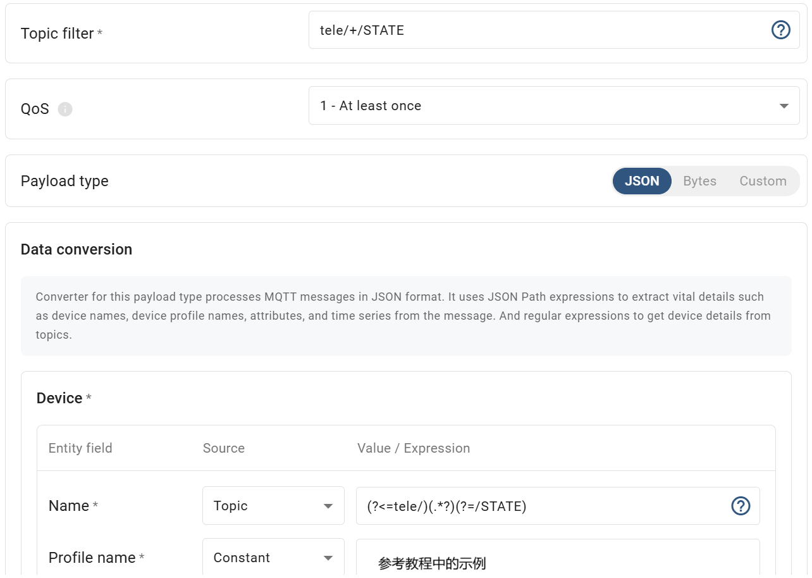

架构
参考链接：https://thingsboard.io/docs/iot-gateway/what-is-iot-gateway/
想要将tasmota接入thingsboard需要由以下几个部分组成：
tasmota -> mqtt broker -> IoT Gateway -> thingsboard
安装流程
主要参考官网教程：https://thingsboard.io/docs/iot-gateway/getting-started/
前期准备工作
安装 Docker
安装 thingsboard
导入 MyGetway 管理页面
教程 Prerequisites 小节下载两个 json文件，并按照 Import gateway widgets bundle and dashboard 导入 thingsboard。
按照教程在 Dashboards 中创建 MyGateway 并进入详情页，点击 Launch command 按钮。


如果你和我一样没有内容，不要着急换个地方打开：Entities/Gateways/My Gateway/Launch command
安装 Gateway 和 mosquitto
继续按照教程通过 docker 安装 tb-gateway
Step 3. Add new connector 中我们选择 MQTT 连接方式。通过docker安装mosquitto （安装好的 mosquitto 不用账号密码验证）
Setup connector 小节中 Host 填写主机的公网IP或者 127.0.0.1； Port 填写 1884，因为1883被 thingsboard 占用了，所以安装 mosquitto 的docker指令使用的是 docker run -it -p 1884:1884 thingsboard/tb-gw-mqtt-broker:latest。
继续按照教程操作
Add mapping （解码信息）
解码 tasmota 通过mqtt 消息发送到 mosquitto 的消息。

现取其中部分作以说明：
tele/+/STATE: + 是设备名此部分是可变的
Name： 设备名称，是从 Topic 中通过正则表达式 (?<=tele/)(.*?)(?=/STATE) 取出来的。例如主题是：tele/tasmota_0BF5D0/STATE ，经过正则表达式取出设备名称 tasmota_0BF5D0。
Attributes: 解码属性（不经常变的），解码逻辑参考页面内部的帮助文档。
Time series：时间序列（经常发生变化的）

Requests mapping （发送控制指令）

可以在🔒中测试控制指令，建议使用类似 MQTT-Explorer 这种调试软件观察指令发送和响应情况。

Power1 指的是 tasmota 设置为 Relay 1 的引脚。RPC command 向对应的主题发送消息。
tasmota 联网 设置mqtt参数
tasmota 设置完成后，使用 MQTT-Explorer 连接到 mosquitto，观察是否成功上报主题。
再从 thingsboard 菜单 Entities/Devices 查看是否有自动添加的设备。点击设备，如 tasmota_0BF5D0 查看 Attributes 页，检查数据解析是否正常。

thingsboard 界面显示和按钮发送控制指令
使用 Attributes card 显示状态，初期测试 Type 请选择 Device，后面设置多了需要做成类似模板的时候再选择 Entity。

使用 RPC Button 发送控制指令
红色箭头的地方任意，只影响按钮显示文本